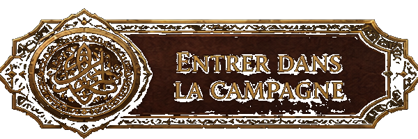
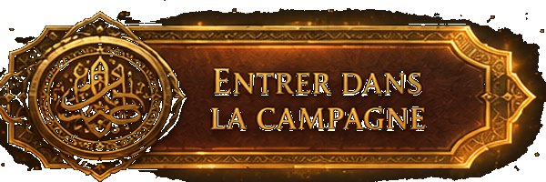
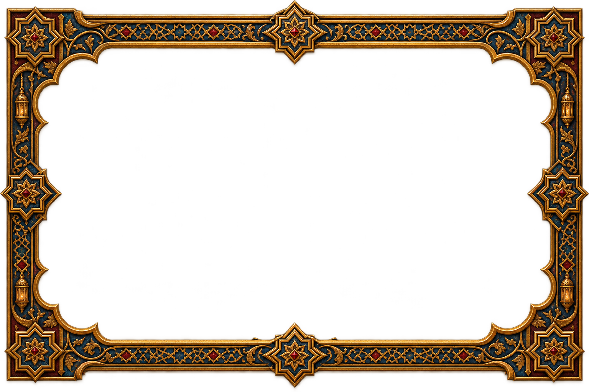

À Keha, le savoir se marchande et la magie se paie toujours plus cher que promis. Entre trahisons de cour et pactes interdits, chaque pouvoir gagné en coûte un autre.



Sous le soleil bas du désert d'Aladdab, Keha rassemble en une seule mosaïque les échos d'un monde à bout de souffle : cours andalouses et ottomanes en son cœur, cathédrales gothiques à ses frontières nord, ruines gréco-romaines sur ses îles.
Un bas-fantasy sombre où la corruption ne vient pas des monstres, mais des hommes — et où l'addiction au savoir interdit se paie toujours, tôt ou tard.
Trahison · Corruption · Savoir interdit